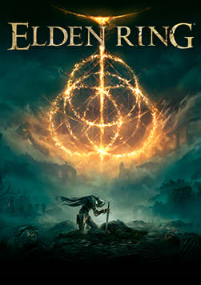
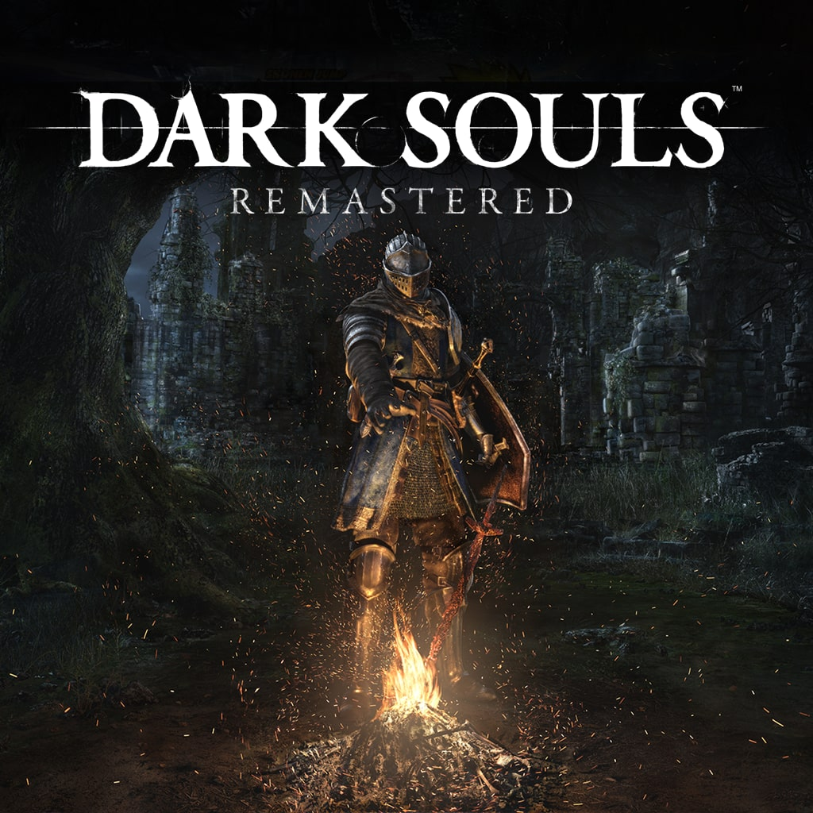
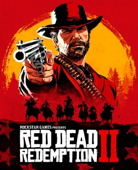
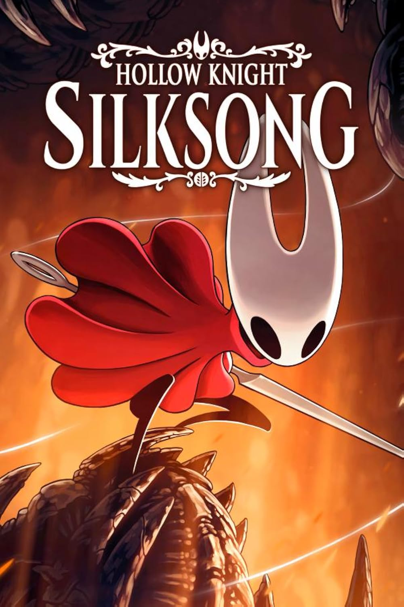

Projeto pessoal · Front-end
GameTrack
Interface de uma plataforma para catalogar e avaliar jogos, com busca, destaques da semana, melhores avaliados e reviews da comunidade.
- HTML
- CSS
- Bootstrap

Sobre o projeto
O GameTrack é a interface de uma plataforma inspirada em serviços de catalogação de jogos: o usuário pesquisa títulos, acompanha os jogos populares da semana, vê os mais bem avaliados pela comunidade e lê reviews de outros jogadores. O foco do projeto foi construir uma página inicial completa e responsiva, com cards de capa, estatísticas de visualizações/curtidas e avaliação em estrelas para cada título.
Estrutura da página
Cabeçalho e busca
Barra de pesquisa de jogos, navegação para catálogo, criação de conta e login, sempre visível no topo.
Hero
Chamada de destaque convidando o usuário a avaliar jogos já jogados e salvar os que ainda quer jogar.
Populares da semana
Grade de cards de capa com visualizações, curtidas e nota média de cada jogo em destaque.
Mais bem avaliados & reviews
Seções dedicadas aos títulos com melhor nota da comunidade e aos comentários mais recentes dos jogadores.
Catálogo de jogos
Alguns dos títulos usados para compor a vitrine de capas do protótipo.






Detalhes técnicos
A página foi construída em HTML e CSS puro, utilizando o framework Bootstrap 5 para a grade responsiva e componentes de layout, com estilos próprios para os cards de jogo, overlays de estatísticas e o cabeçalho fixo de navegação. O objetivo foi treinar organização de layout em grade, hierarquia visual de conteúdo e componentização de cards reutilizáveis — habilidades centrais de front-end antes de evoluir para frameworks como Angular, usado no projeto WearDon.